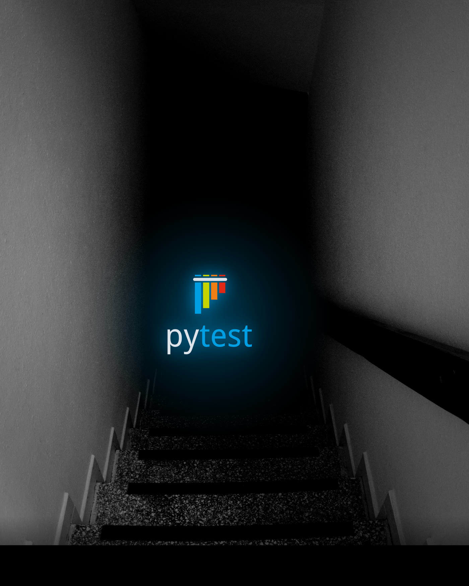

Grzegorz Kocjan · BeLazy.dev
def test_car_has_correct_color(car_case, first_sighting):
assert first_sighting["color"] == car_case.current.color
The only door that wasn't locked.
@pytest.fixture(scope="session")
def web_service(docker_services):
docker_services.start("web") # docker compose up -d
port = docker_services.port_for("web", 80)
docker_services.wait_until_responsive( # don't sleep — wait for ready
check=lambda: check_url(docker_services.docker_ip, port),
timeout=30.0, pause=0.5,
)
return f"http://{docker_services.docker_ip}:{port}"
cam_mockThe system doesn't know it's watching the past.
import pytest
CARS = ["car1", "car2", "car3", "car4", "car5"]
@pytest.mark.parametrize("car", CARS)
def test_color(car):
assert car in CARS
@pytest.mark.parametrize("car", CARS)
def test_plate(car):
assert car in CARS
✗ static — frozen the moment Python imports the file. Can't read runtime config.
def pytest_generate_tests(metafunc):
recording_cases, vehicle_cases = load_cases(...) # our cases live in JSON
if "vehicle_case" in metafunc.fixturenames: # scope: ONE car
metafunc.parametrize("vehicle_case", vehicle_cases,
ids=id_from_vehicle, indirect=True)
if "recording_case" in metafunc.fixturenames: # scope: WHOLE recording
metafunc.parametrize("recording_case", recording_cases,
ids=id_from_recording, indirect=True)

test_cars.py::test_color[car1]
test_cars.py::test_color[car2]
test_cars.py::test_color[car3]
test_cars.py::test_color[car4]
test_cars.py::test_color[car5]
test_cars.py::test_plate[car1]
test_cars.py::test_plate[car2]
test_cars.py::test_plate[car3]
test_cars.py::test_plate[car4]
test_cars.py::test_plate[car5]
10 tests collected — ordered by function, not by car
@pytest.fixture
def recording_stopped():
pass # empty fixture = a phase marker: "I run after the movie ends"
def pytest_collection_modifyitems(session, config, items):
grouped = defaultdict(lambda: {"live": [], "end": []})
for item in items:
case = item.callspec.params.get("vehicle_case") \
or item.callspec.params.get("recording_case")
phase = "end" if "recording_stopped" in item.fixturenames else "live"
grouped[case.recording][phase].append(item)
items[:] = chain(*[[*g["live"], *g["end"]] for g in grouped.values()])
test_cars.py::test_start_recording[rec1]
test_cars.py::test_color[car1]
test_cars.py::test_plate[car1]
test_cars.py::test_color[car2]
test_cars.py::test_plate[car2]
test_cars.py::test_color[car3]
test_cars.py::test_plate[car3]
test_cars.py::test_color[car4]
test_cars.py::test_plate[car4]
test_cars.py::test_color[car5]
test_cars.py::test_plate[car5]
test_cars.py::test_wait_for_recording_stop[rec1]
assert user_count == 1the world where correct means equal
def test_car_has_correct_color(car_case, first_sighting):
assert first_sighting["color"] == car_case.current.colordef test_car_has_correct_color(car_case, first_sighting):
if first_sighting["color"] != car_case.current.color:
warnings.warn("Wrong color") # it cannot fail the buildPLATE = the bill.
COLOR · MAKE = a hint.
nobody ever corrected those
The business, copied into assertions.
- assert first_sighting["color"] == case.color
+ warnings.warn("Wrong color")
- assert first_sighting["make"] == case.make
- assert first_sighting["model"] == case.model
+ warnings.warn("Wrong make or model")
both cars detected perfectly ✓
@pytest.fixture
def first_sighting(event_store, vehicle_case, start_recording):
for search in (by_plate(tolerance=1), # first: plate almost exact
by_plate(tolerance=2), # then: allow two wrong chars
by_time): # last resort: nearest in time
sighting = wait_until(search, timeout=remaining_recording_time())
if sighting:
return sighting
assert False, f"No sighting for {vehicle_case.current.plate}"
Three suitcases are circling.
You take yours — check it, move on.
Not yours? Someone else will claim it.
Each test waits for its car.
def _weight(expected, received):
if expected.direction != received.direction:
return MAX_WEIGHT # irreconcilable
distance = edit_distance(expected.plate, received.last_plate)
if distance > MAX_EDIT_DISTANCE:
return MAX_WEIGHT
lateness = max(0, abs(received.frame_time - expected.appear_at) - 2_000)
return distance + lateness / 10_000 # 10 seconds late = 1 typo
cost_matrix = [[_weight(e, r) for r in received] for e in expected]
rows, cols = linear_sum_assignment(cost_matrix) # Hungarian algorithm (scipy)
10 seconds late = 1 typo. MAX_WEIGHT = simply forbidden.
from pytest_check import check # soft asserts — test runs to the end
def test_no_misses_extras_or_late(recording_case, event_store,
recording_stopped, results_bag):
stats = calculate_misses_extras_and_late(expected, received)
results_bag.statistics = stats # collect — the report comes later
with check:
assert stats.misses == [], f"{len(stats.misses)} missed"
with check:
assert stats.extras == [], f"{len(stats.extras)} ghosts"
with check:
assert stats.late == [], f"{len(stats.late)} late"
def test_car_has_correct_color(car_case, first_sighting):
if first_sighting["color"] != car_case.current.color:
warnings.warn("Wrong color") # it cannot fail the buildBut a warning cannot catch the trend.
from pytest_harvest import get_fixture_store # store from every test
def test_accuracy(request, reports_path):
store = get_fixture_store(request) # all the results_bags
stats_by_recording = {
bag["recording"]: bag["statistics"]
for bag in store["results_bag"].values() if "statistics" in bag
}
print(summary_report(stats_by_recording)) # table per recording + TOTAL
total = sum(stats_by_recording.values(), Statistics())
assert total.accuracy >= 0.85, f"{total.accuracy:.0%} below the 85% bar"
One wrong color: a warning. A trend: a failed build.
from pytest_harvest import get_fixture_store # store from every test
def test_accuracy(request, reports_path):
store = get_fixture_store(request) # all the results_bags
stats_by_recording = {
bag["recording"]: bag["statistics"]
for bag in store["results_bag"].values() if "statistics" in bag
}
print(summary_report(stats_by_recording)) # table per recording + TOTAL
total = sum(stats_by_recording.values(), Statistics())
assert total.accuracy >= 0.90, f"{total.accuracy:.0%} below the 90% bar"
One wrong color: a warning. A trend: a failed build.
def test_recognize_car():
frame = load_frame("bha-215.png") # Arrange
sighting = recognize(frame) # Act
assert sighting.plate == "BHA-215" # Assert
Simple? Then this is perfect.
@pytest.fixture
def frame():
return load_frame("bha-215.png") # Arrange
def test_recognize_car(frame):
sighting = recognize(frame) # Act
assert sighting.plate == "BHA-215" # Assert
@pytest.fixture(scope="module")
def frame(): # Arrange
return load_frame("bha-215.png")
@pytest.fixture(scope="module")
def sighting(frame, recognize_spy): # Act — runs once per module
recognize_spy = Mock(wraps=recognize)
return recognize_spy(frame)
def test_plate(sighting):
assert sighting.plate == "BHA-215"
def test_color(sighting):
assert sighting.color == "navy"
def test_act_ran_once(recognize_spy):
assert recognize_spy.call_count == 1 # proof: 2 tests, one Act
Hide the complexity in the fixtures. Keep the tests down to a few lines.